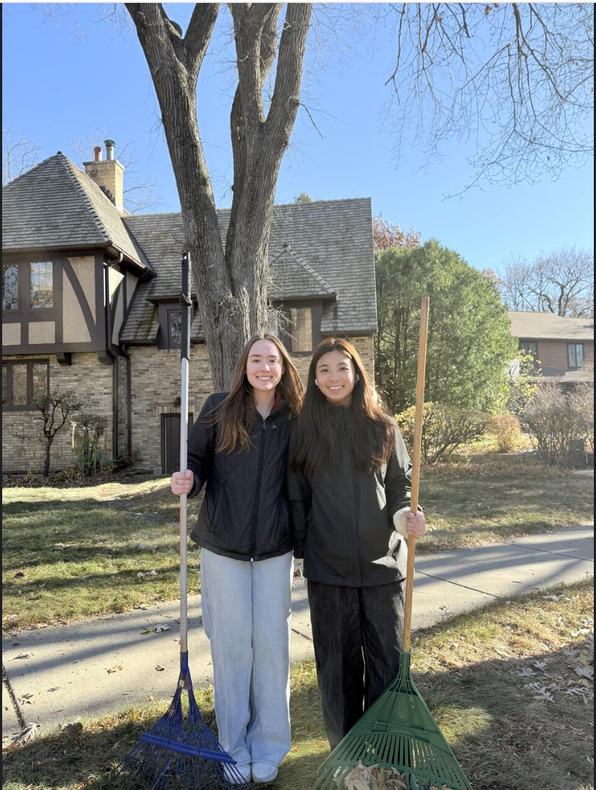
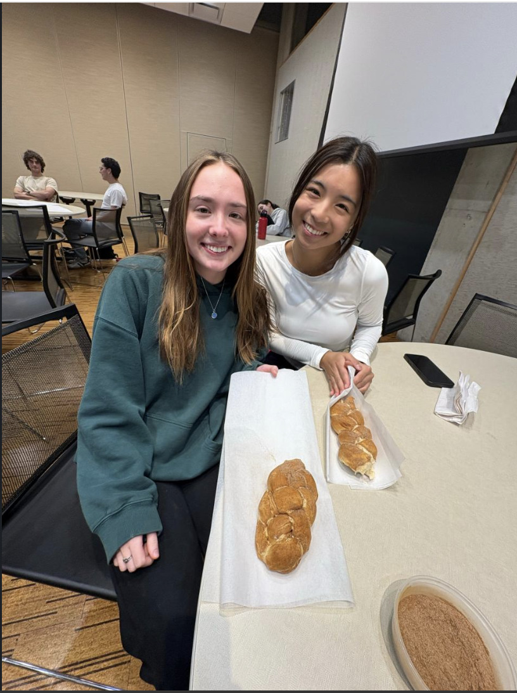
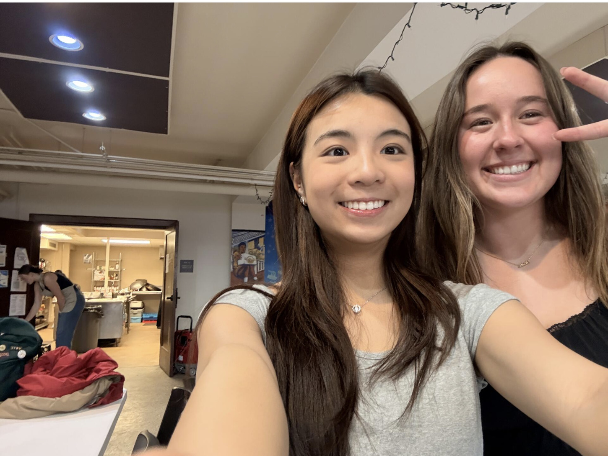

SERVICE FRATERNITY
SEP 2025 — PRESENT
Service feels better
when it's shared.
As a member of Alpha Phi Omega, I participate in campus and community service projects while building relationships with other students who care about contributing beyond themselves.
Completed 15+ volunteer hours supporting campus and community service initiatives.
Contributed to projects centered on community outreach, civic engagement, and student well-being.
Participated in professional-development programming exploring topics including AI, data ethics, innovation, leadership, and service.



& counting
COMMUNITY
FRIENDSHIP